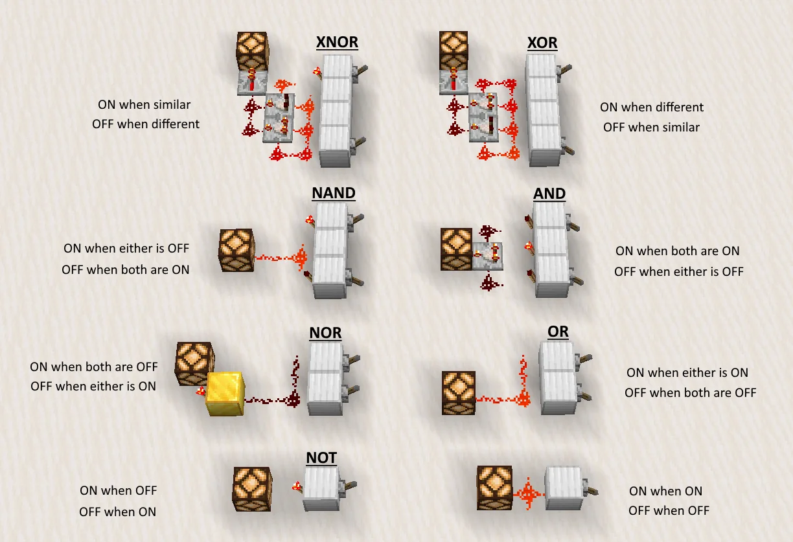

|
|
|
|
|
|
|---|
La redstone est un élément essentiel de Minecraft, elle permet de créer des circuits électroniques et des machines. Elle est inspirée du courant électrique et permet de créer des portes, des ascenseurs, des horloges, des systèmes de tri, des systèmes de défense, des systèmes de minage automatique, etc. La redstone est un élément très complexe et il est possible de créer des systèmes très sophistiqués avec. C'est un élément très apprécié par les joueurs de Minecraft et il existe de nombreux tutoriels sur internet pour apprendre à l'utiliser.

La redstone est extraite du minerai de redstone, qui se trouve dans les profondeurs du monde de Minecraft. Il est possible de la trouver en minant et en explorant des grottes. Grâce à cette poudre et ses dérivés, nous pouvons construire des systèmes, simples ou d'une complexité énorme (comme des ordinateurs fonctionnels sur 4 ou 8 bits) Il n'y a pas de limite, et toujours une marge d'optimisation
Par exemple, en plaçant différents items redstone, on peut émuler des portes logiques et des transistors... En combinant ces éléments, on peut créer des systèmes encore plus complexes.

Il y a 1089 éléments ou items dans minecraft. Un des grands enjeux d'un monde minecraft est donc la gestion de ces items. Le faire à la main est un calvaire sans nom et source de conflits en multijoueur (qui a pris le dernier diamant ?)... L'item sorter est donc une solution utile pour trier les items automatiquement. Minecraft est codé de manière à donner une signature unique à chaque item, qui peut être captée comme un signal éléctrique par la redstone. En combinant ces signaux, on peut créer des systèmes de tri très efficaces.
Ingénieur retraité à 25 ans, converti à Minecraft depuis, Aypierre est le maître incontesté de la redstone dans la communauté francophone Il fut un des premiers à mettre la lumière sur le potentiel énorme de la redstone dans minecraft. En 2012, il sort une série Guide Redstone qui a marqué les esprits et a inspiré des générations de joueurs.